IZANAMI
Captures desktop
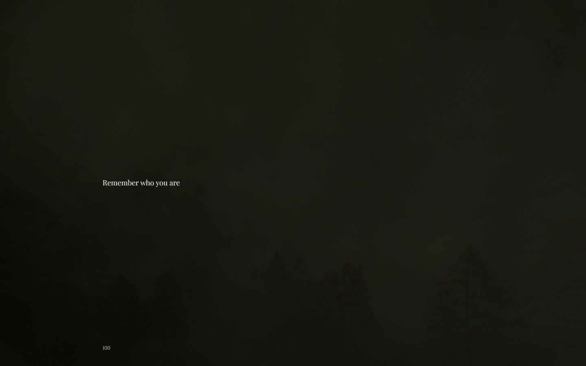

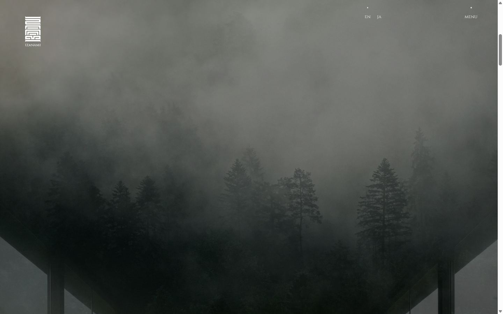
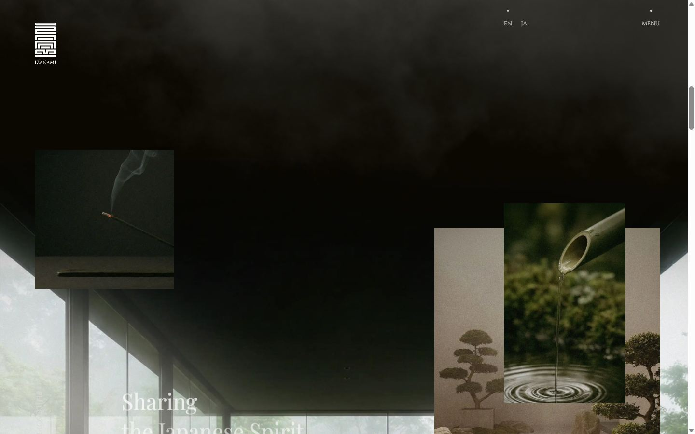
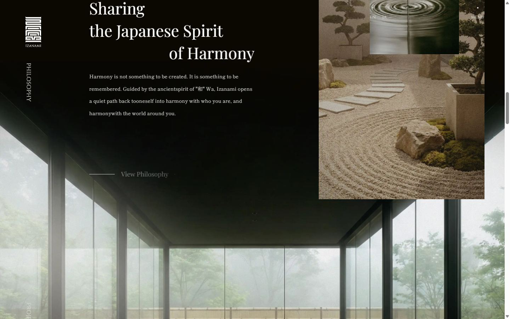
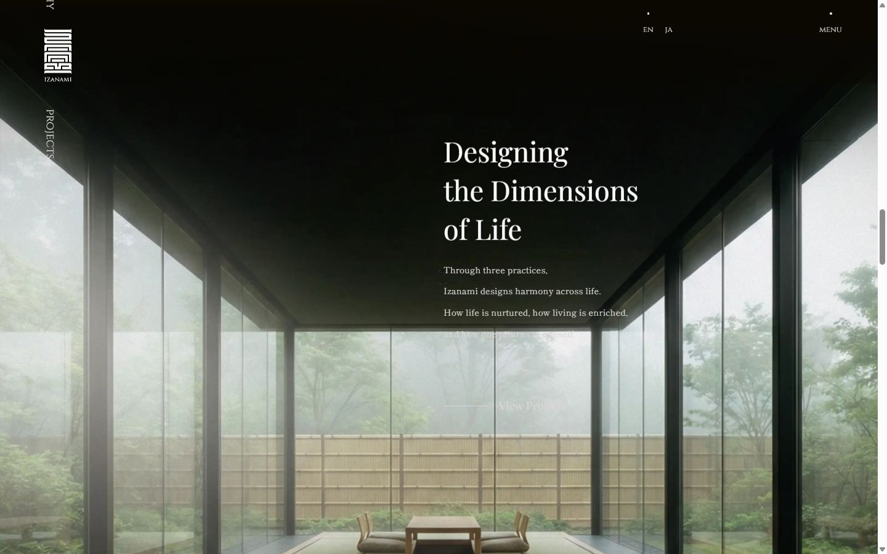
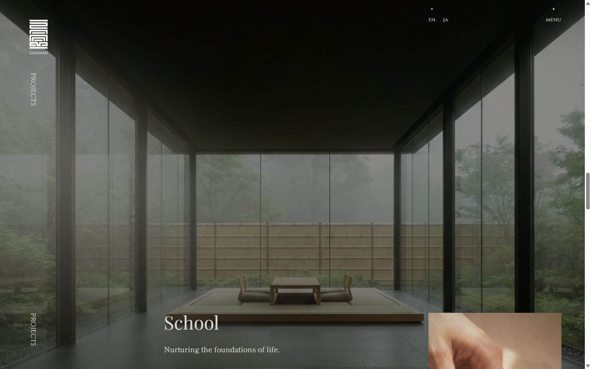
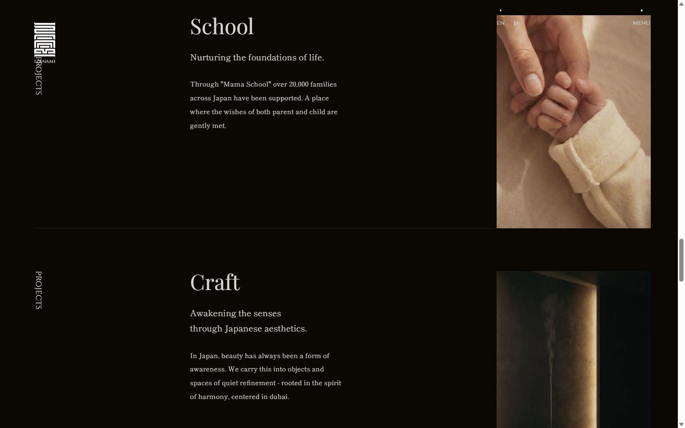
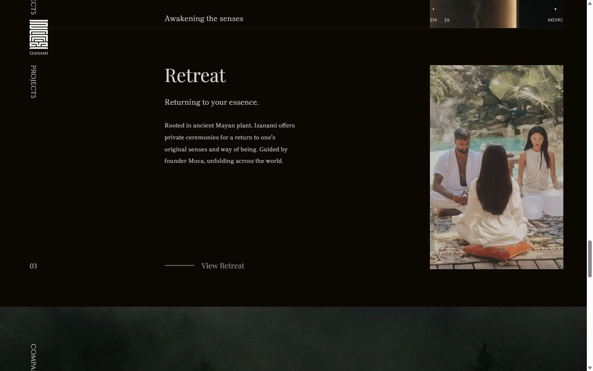
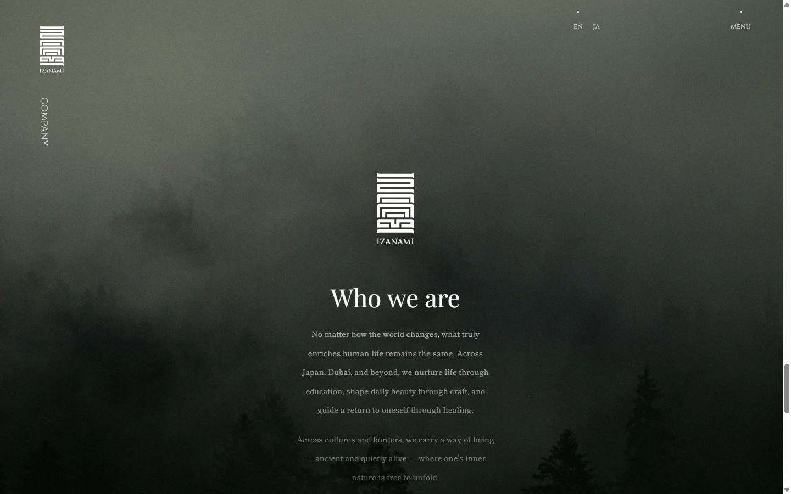
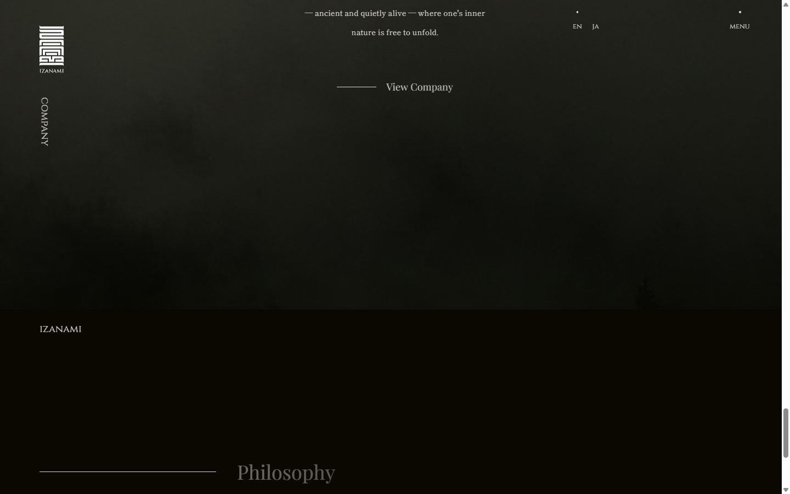
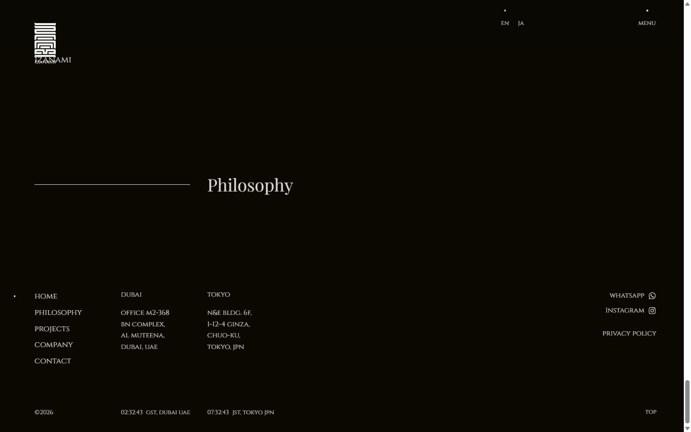
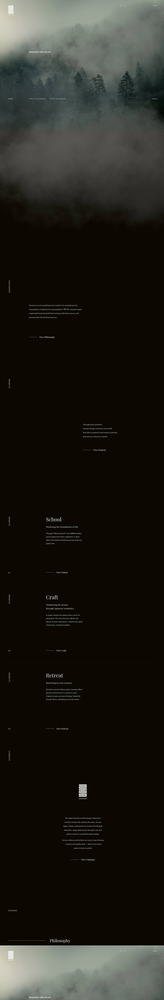
Pages internes
Mobile
Stack détectée
Alpine.js, GSAP, Lenis, ScrollTrigger, SplitText/SplitType, Swup, Three.js, Virtual scroll, WebGL
Shaders GLSL personnalisés extraits : 31 (voir shaders.glsl)
Design tokens
Couleurs (fonds, pondérées par surface)
#d9d7d4
Couleurs de texte
#d9d7d4 · #ffffff
Polices utilisées (par volume de texte)
Shippori Mincho · Cinzel · Playfair Display · Helvetica Neue
Fichiers de police chargés
Typographie
| Élément | Police | Taille | Graisse | Interligne | Interlettrage | Casse |
|---|---|---|---|---|---|---|
| h1 | "Helvetica Neue", Arial, "Hiragino Kaku Gothic Pro | 16px | 400 | normal | normal | none |
| h2 | Cinzel, serif | 18px | 400 | 18px | normal | none |
| h3 | "Helvetica Neue", Arial, "Hiragino Kaku Gothic Pro | 16px | 400 | normal | normal | none |
| p | "Helvetica Neue", Arial, "Hiragino Kaku Gothic Pro | 16px | 400 | normal | normal | none |
| a | "Helvetica Neue", Arial, "Hiragino Kaku Gothic Pro | 16px | 400 | normal | normal | none |
| button | "Helvetica Neue", Arial, "Hiragino Kaku Gothic Pro | 16px | 400 | normal | normal | none |
| li | "Helvetica Neue", Arial, "Hiragino Kaku Gothic Pro | 16px | 400 | normal | normal | none |
| body | "Helvetica Neue", Arial, "Hiragino Kaku Gothic Pro | 16px | 400 | normal | normal | none |
Échelle des tailles de texte
18px (151) · 12.6px (45) · 14.4px (40) · 36px (21) · 16.2px (13) · 16px (11) · 45px (10) · 27px (5)
Arrondis
50%
Transitions CSS fréquentes
Points de rupture (media queries)
768px · 767px
Animations CSS (@keyframes)
cloudMove01, cloudMove02, notFoundCloudMove01, notFoundCloudMove02
Variables CSS (:root)
--color-white-pure: #fff; --color-white: #d9d7d4; --color-black: #0a0801; --color-black-pure: #000; --color-yellow: #caa100; --grid-index: 100; --loader-index: 90; --header-index: 80; --transition-index: 70; --nav-webgl-index: 60; --nav-index: 50; --aside-index: 40;
Structure de la home
Hauteur : 8665 px — 734 nœuds DOM — canvas 2, vidéos 0, images 4
| # | Bloc | Hauteur | Titre | Médias |
|---|---|---|---|---|
| 1 | div .homeHeader | 1440 | Remember who you are | 8 |
| 2 | section .homePhilosophy | 1816 | philosophy | 0 |
| 3 | section .homeProjects | 3158 | projects | 0 |
| 4 | section .homeCompany | 1440 | company | 0 |
Navigation : IZANAMI · enen · jaja · home · philosophy · projects · schoolschool · craftcraft · izanami spaceizanami space · retreatretreat · company · contact · privacy policyprivacy policy · homehome · philosophyphilosophy · projectsprojects · companycompany · contactcontact
Boutons / CTA :
SEO
Plan des titres
Performance (mesure locale, Chrome headless, connexion non bridée)
Mobile
Fichiers
captures/ : arrivée, scroll desktop (1440×900), pleine page, pages internes, mobile (390×844 @2x) ; vidéo de scroll dans la release GitHub « videos » (lien en haut de fiche)page.html : DOM rendu · styles.css : CSS chargé · scripts/ : JS chargé (index dans _index.json) · shaders.glsl : shaders extraits · rea-bundle.json : analyse REA du bundle (chunks, routes, endpoints)